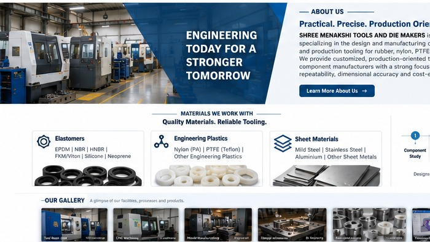

Practical, production-oriented tooling solutions for industrial component manufacturers.

SHREE MENAKSHI TOOLS AND DIE MAKERS specializes in the design and manufacturing of precision tools, dies, moulds, and production tooling for rubber, nylon, PTFE (Teflon), and sheet metal components.
We provide practical, production-oriented tooling solutions with a focus on precision, durability, repeatability, and cost-effective manufacturing.